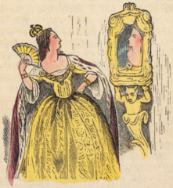

This
week, MandelaEffect.com visitor Mike H. shared a couple of video links
with me. (I rarely have time for YouTube, even for topics that interest
me.)
I’ve posted those videos, below. Because this is a busy
week, I haven’t watched either video, in full, but — skimming the
second one — I realized something that’s important. Well, it’s important
to me, anyway, as it’s part of how I remember things, and how I clarify
those memories.
I’m a visual learner. Things that I see reinforce memories, and they can trigger memories, as well.
Every
day, I receive many emails and comments related to alternate memories
(and an alternate past). On average, I recall about 20% of the memories I
read in those emails & comments. I think most people agree with
some — but not all — alternate memories they read about at this website and others that explore the Mandela Effect.
Sometimes, I’m not sure about a particular memory. It may be a dual memory, but, at other times, it’s something that wasn’t important to me (when I first learned about it), so I don’t want to claim I’m certain of the alternate memory.
For me, one of those ambivalent memories was the Star Wars’
movie line, “Luke, I am your father,” as opposed to “No. I am your
father.” (The movie seems to have the latter line, not the former.
However, with several different edits of the original Star Wars movies in circulation, those movies aren’t the strongest evidence to support Mandela Effect theories.)
I was fairly certain I recalled the line as “Luke…,” but — though I’m a fan of Star Wars — I can’t claim that one line made enough of an impact for me to be confident of my alternate memory.
Then, I saw the visual in the second video, below. It triggered vivid and detailed memories of seeing Star Wars for the first time… and the second time, the third, and so on.
Right away, I understood why — in my reality, at the time — that line definitely started with “Luke…”
It’s
because, at times of stress and urgency, when a parent wants to impress
his (or her) child with an important fact or order, that parent almost always starts the sentence with the child’s name.
Had
Darth Vader said “No. I am your father,” I would have thought he was
lying, trying to throw Luke off-guard. I’d have expected the lie to be
exposed in the sequel to that film.
That’s my kind of logic. But,
until I saw Darth Vader facing Luke in the video, below, I wasn’t 100%
certain that my original memory was different from what’s current in
this reality.
So, I’m sharing these videos in case they’re helpful
to others. I’d like not to launch another “Heinz 57 varieties” series
of comments on the individual topics, but I’m interested in hearing from
people who find visual cues helpful in clarifying alternate memories.
I’d also like to know how you decide whether something is an alternate memory for you.
That is, do you look it up, online? Or, do you go back to an old book,
movie, or journal? Do you check with friends or family who might have
the same memory?
What’s your process when you encounter a memory that doesn’t fit the current reality?
From
comments and email, it’s clear that many Mandela Effect readers recall
Mother Teresa (also remembered as Mother Theresa) being declared a saint
prior to 2016.
Some recall her being named a saint in the 1990s.
Some are sure she was given sainthood while alive.
Some specifically reference Pope John Paul II as the pope who approved the canonization.
It’s important to note some landmark recognitions during Mother Teresa’s life and in the years since her death.
In 1962, she was given the Philippines-based Ramon Magsaysay Award for International Understanding.
In 1969, she was featured in the film, Something Beautiful for God.
In 1971, Paul VI awarded her the first Pope John XXIII Peace Prize.
In 1979, she was awarded the Nobel Peace Prize.
In 1980, she received India’s highest civilian award, the Bharat Ratna.
After her 1997 death, Pope John Paul II waived the usual five-year wait and began the beatification process.
In 2002, the Vatican recognized the first of two required miracles leading to Mother Teresa’s canonization.
In 2003, she was officially beatified.
In 2015, the Vatican recognized the second of the two required miracles.
If
you recall a reality in which she was named a saint (canonized) earlier
than 2016, I hope you’ll share those memories in comments,*
below. I’m particularly interested in the context of your
memories. That is, where you were, which spelling (Teresa or Theresa)
you recall, whether you read about her sainthood in a book, heard about
it in class, learned about it from a news report or online, and so on.
*On most articles at this site, comments remain open for 45 days.
Several people have said — in comments or via the Contact form
— that they recall the Oscar ceremony where Leonardo DiCaprio won the
Best Actor award. They recall a similar acceptance speech, as well.
However, they recall it happening in the past.
(And no, they’re not confusing it with the BAFTA ceremony in February. Some of them mentioned the BAFTAs, specifically, as a ceremony they’d ruled out as a mix-up.)
I didn’t watch either 2016 ceremony, so I don’t have this memory and I’m not sure how widespread it is as a Mandela Effect.
If you have this memory from the Oscars, tell us when
you remember DiCaprio winning, and anything else that makes it a
credible, alternate memory matching an “earlier” 2016 Oscar Awards.
I’m especially wondering whether we’ll see a coincidence of memory dates. If so — and yes, this is speculation verging on the fantastical — it could identify a reality where time is tracking ahead of us by a specific amount.
Update: I’m receiving reports with clear memories of DiCaprio winning the Best Actor award for Titanic, including 1998 talk shows replaying his acceptance speech. If you have this memory, or recall DiCaprio winning for any other movie, share it in comments, below.
*As
usual, “you’re just confused” comments won’t be approved. It’s assumed
that anyone commenting here has already checked for similar, easily
confused memories.
Thanks
to Mike H. for bringing this to my attention: the change between the TV
series “Different Strokes” and “Diff’rent Strokes.”
Until Mike mentioned it, I thought it was Different Strokes.
However, I never watched the TV series, so I can’t state — with
confidence — that the show name has changed. Maybe I wasn’t paying
close attention to the name when someone referenced it.
Also, I
don’t follow Reddit (not for Mandela Effect topics, anyway), and I don’t
usually look at “Mandela Effect” videos at YouTube.com. (I haven’t
posted any videos about the Mandela Effect, and I kind of resent it when
people want to connect the Mandela Effect phrase with “debunking”
videos about Flat Earth Theory or anything else that takes us
off-topic.)
So, I was rather pleased when Mike sent me the following video link. I don’t share all of timberwolves100’s memories or views, and — at this site — I avoid topics of religion and psy-ops or conspiracies. (See my Comments terms.)
(Nevertheless, since the “Lord’s Prayer” topic keeps coming up: everyone is correct about “debts” v. “trespasses.” Both are in the Bible, and it depends on which version you were raised with: Luke’s or Matthew’s. Most were raised with the “debts” version. The only way this topic enters the Mandela Effect is if you know
you were raised with Luke’s version, but — in this reality — your
family insists you were raised with Matthew’s, or vice versa. So, along
with politics and conspiracies, let’s avoid religious topics here,
including any Lord’s Prayer discussions.)
However much of timberwolves100’s
video is a powerful overview of several topics we’ve discussed here in
the past year. And — fast-forwarding to around the 11:30 mark — he sums
it up nicely when he says you should find out what’s real for you.
It’s
not necessarily media manipulation or psy-ops or anything like that.
Don’t let anyone turn this into something that makes you uneasy,
resentful, or downright anxious.
In my opinion, the Mandela Effect makes it possible for all of us to be correct in our memories, even when those memories seem to conflict with others’. So, it should put you more at ease, not increase your anxiety.
And, we’re not all traveling together in a pack. Just because you remember “Berenstein Bears” doesn’t mean you must also recall Looney Toons, or Mandela’s 20th century death, or any other alternate memory described as the Mandela Effect.
Trust your memories.
So, did you watch Diff’rent Strokes regularly enough to be sure it was Different Strokes? I’m interested in how widespread this alternate memory is.
And really, I’m applauding timberwolves100 for making a good, common-sense video. Thanks!
This
topic was first raised in August 2015, around the time that the
Berenstein/Berenstain topic surged in popularity. So, it may have become
lost in the Bears discussions.
David S. was the one who mentioned it. He said,
“I’ve noticed weird examples of this for years. E.g. a movie with
Sinbad where he plays a genie but the closest thing would be Kazaam with
Shaq.”
Sinbad,
there is a large rumor/conspiracy going around that you played a genie
in a movie in the 90’s similar to Shaq in Kazaam. Can you confirm or
deny the existence of this supposed film? Thanks for the AMA!
it was SHAQ SHAQ SHAQ but we all look alike
Several
people replied to David’s comment, and I’ve moved their comments to
this post, so this discussion can continue, focusing specifically on the Sinbad movie.
[Temporarily, the number of previous comments are showing up as a count, but not the actual
comments, except on my dashboard. I’m hoping to sort this glitch, soon.
Several other people remembered this movie, and — along with at least
one other person — I found the actual movie listed in a Google search.]
Also, DbD had asked whether or not this Sinbad/Genie movie appeared (and then vanished) around the same time as the Looney Tunes/Toons change. It’s a good question.
Since
I saw the movie in search results — and images from the movie, as well —
when David S. commented (August 2015), I’m not sure the timing matches.
If anyone else has both memories and can give a time frame, that could be useful.
Sinbad looks
like a genie. To me, it’s not just the missing movie that’s odd… it’s
that, in this reality, no one cast him as a genie, ever. It’s hard to
imagine Hollywood not making good use of obvious casting and easy
marketing.
Recently,
after people had raised “Looney Toons” as an alternate memory,
something odd happened: People report seeing “Looney Tunes” (the actual name) change to “Looney Toons,” at many websites, just for a day or so.
For example, on 28 Nov 2015, Emily said, “Hey guys…. Looney Tunes changed again. Just last week it was Looney Toons…” (“Last week” would have been Nov 15th – 22nd.)
Ordinarily,
I’d dismiss that kind of report as a brief and localized issue —
usually a print media error, or a typo in a digital TV show listing.
Also, it doesn’t help that Tiny Toons
exist, with similar graphics to their “grown-up” counterparts. So, that
provides plenty of reason for people to be confused about the cartoon
series’ names.
(However, several people — including Lebaneser Scrooge — mentioned Tiny Toons in their comments, so they were aware of the difference.)
In
this case, Emily’s comment was one of many. She wasn’t confusing “Tiny
Toons” and “Looney Tunes.” In fact, reports were widespread and
credible.
The alternate memory — a reality in which it really is “Looney Toons” — was suggested in some 2014 emails. By March 2015, people were more outspoken about this. (See a comment on Comments 5 and another on Comments 6, with more on later pages.)
So, if the one-day switch was deliberate, the crossover wasn’t original; we’d already talked about it, here. And — if it was
a genuine mistake (by one or more people) — one might question whether
those who changed the name, temporarily, may have come from another
reality.
But, that’s assuming the brief name change occurred in this reality. And frankly, it’s stacking one speculation atop another, reaching a precarious conclusion.
As I see it, we have several explanations, none of which can be proved. Here they are, in no particular order:
Everyone who thought they saw “Looney Toons” was mistaken. (I don’t believe that, based on the volume of reports I received, but it must be mentioned if we’re considering every possibility.)
Everyone
who saw “Looney Toons,” online, had slid into a reality where that was
the correct spelling. And then they slid back into this reality, without
noticing any other alternate-reality cues.
The veil
(or whatever you want to call it) between realities thinned, briefly and
only in certain locations, so the alternate reality’s “Looney Toons”
name phased into view in (or from) this reality.
The brief
change — from Looney Tunes to Looney Toons — was deliberate, and either a
prank or a social experiment. (The scale of that would be impressive,
but not impossible.)
If you saw Looney Toons in
November (or at any other time), share your thoughts in comments, below.
If possible, include when you saw it, and where you were at the time
(nearest city).
“Mirror, mirror” is what most people remember the Queen saying in the 1937 Disney movie, Snow White and the Seven Dwarfs. In fact, IMDb describes the Disney film as “by far most memorable full-length animated feature from the Disney Studios.”
One would think that “memorable” movie produced reliable, consistent memories, including the famous “Mirror, mirror” line.
However, the Queen in that movie actually said, “Magic mirror on the wall.”
Is that an example of the Mandela Effect? Possibly.
Our dilemma is rooted in the history of Snow White.
The original Brothers Grimm story

An illustration from page 21 of Mjallhvít (Snow White) an 1852 Icelandic translation of the Grimm-version fairytale.
The original story was called “Schneewittchen,” which translates to “Snow White.” (Schnee = Snow, and Wittchen = White.)
IT
was the middle of winter, and the snowflakes were falling from the sky
like feathers. Now, a Queen sat sewing at a window framed in black
ebony, and as she sewed she looked out upon the snow. Suddenly she
pricked her finger and three drops of blood fell on to the snow. And the
red looked so lovely on the white that she thought to herself: ‘If only
I had a child as white as snow and as red as blood, and as black as the
wood of the window frame!’ Soon after, she had a daughter, whose hair
was black as ebony, while her cheeks were red as blood, and her skin as
white as snow; so she was called Snowdrop. But when the child was born
the Queen died. A year after the King took another wife. She was a
handsome woman, but proud and overbearing, and could not endure that any
one should surpass her in beauty. She had a magic looking-glass, and
when she stood before it and looked at herself she used to say:
‘Mirror, Mirror on the wall,Who is fairest of us all?’
then the Glass answered,‘Queen, thou’rt fairest of them all.’
At least the “Mirror, Mirror” phrase remained true to the Grimm version.
The same “Mirror, mirror” phrase appeared in The Red Fairy Book, edited by Andrew Lang, but with a different additional line:
After
a year the King married again. His new wife was a beautiful woman, but
so proud and overbearing that she couldn’t stand any rival to her
beauty. She possessed a magic mirror, and when she used to stand before
it gazing at her own reflection and ask:
'Mirror, mirror, hanging there,
Who in all the land's most fair?'
(Some other translations change the phrase entirely to lines such as “’Tell me, glass, tell me true! Of all the ladies in the land, Who is fairest, tell me, who?’ I don’t think they’re relevant to this discussion, but they must be mentioned.)
So, regardless of the lines that followed, most related fairy tales seemed to say “Mirror, Mirror.”
For over 100 years — through the mid-20th century — that was the phrase people associated with Snow White.
Disney’s “Snow White” – the same or different?
Certainly, the Disney movie was adapted from the Grimm brothers’ tale.
The oft-quoted line in the movie is remembered as: “Mirror, mirror, on the wall, who’s the fairest of them all?”
However, in this reality the Disney movie’s Queen has always said “Magic mirror.”
It’s easy to find “mirror, mirror” references in pop culture. Recent examples include everything from Star Trek to the 2012 movie starring Julia Roberts, and beyond.
The
problem is: That phrase originated with the fairy tale published and
popularized in the 19th century. We can’t draw a straight line from Star Trek (and more modern productions) to the Disney film, and leave it there. We must go back to earlier “mirror, mirror” references.
That’s
the same problem we encounter with many Mandela Effect memories: Since
our memories happened in another reality, I’m not sure we’ll find good, credible supporting evidence in this reality.
Like others, my memory of the Disney film is “Mirror, Mirror, on the wall…,” but that’s anecdotal. Also like others, I can’t support it with anything except others’ anecdotes.
In my opinion, that’s not only a problem; it’s stalled our research.
Evidence, anecdotes, and Mandela Effect reports
For many — perhaps most — of our alternate memories, almost all of our “evidence” is anecdotal.
Thanks to five years of reader input — and thousands of great anecdotes and theories — we can see that something is going on.
I
don’t believe anyone is tampering with history. (Media errors, bias,
and propaganda exist. They’re not part of the Mandela Effect.)
In fact, I believe people’s memories are more reliable than society suggests.
In my opinion, many — perhaps most — of those alternate events happened… just not in this reality.
We may be sliding from one reality to another.
We may be in a holodeck, or have “forgotten” holodeck memories.
And, other explanations may emerge.
I
also believe that the Snow White conundrum is an example of why we now
need to look for patterns. For example: we need to examine when and
where “slides” may have happened. We need to study hard data points to
see what emerges.
Maybe the patterns will relate to CERN activity; it’s too early to leap to that conclusion.
Several explanations will likely dominate, but I’m reluctant to insist there is just one explanation for all alternate memories.
I
never guess. It is a capital mistake to theorize before one has data.
Insensibly one begins to twist facts to suit theories, instead of
theories to suit facts. — Sir Arthur Conan Doyle, author of Sherlock Holmes stories.
We need more data. That’s why I’m shifting the focus of our conversations.
Let’s share specific information in comments, including dates, geographic locations, and markers.
In addition, when new alternate memories are added to our discussions, I’d like to see credible links so interested readers can research those topics, too.
Personal insights are often useful. I don’t want to eliminate them, but — in the future — they can’t continue as the main focus of this site.
As
of December 2015, we have a significant database of general anecdotes —
approximately 10,000 comments. They’re a great foundation for our
research.
Next, let’s use them to connect the dots, or “follow the breadcrumbs,” to use a Grimm reference.
The most promising breadcrumbs seem
to be dates, locations, and markers. Along with scientific theories and
related historical references, they’re our new focus for the start of
2016.
This
topic keeps recurring in comments, so I’m creating this post for
discussions of alternate memories of the Lindbergh baby’s kidnapping.
A few guidelines:
Please
review the facts before posting here. I won’t pretend that Wikipedia is
the final word on any topic, or even reliable, but it’s a good place to
start. [Link] Also see the FBI’s report.
Read
earlier, related comments so you know about erroneous media references.
(“Erroneous” in this reality, that is.) Comment threads that focused
(solely) on this topic have been moved to this article.
Remember that, at the time and considerably later (for example, Murder on the Orient Express [1974]),
fictionalized versions — print, TV, and film — altered several details.
Later, some were repeated as if they were facts in the case. Be sure
they weren’t your original information source.
Please contribute
fresh, useful insights to these conversations: when, where, and a
context that helps us understand why you’re sure yours is an alternate
memory. (Simple “me, too” and “wow, I never knew…” comments will not be
approved.)
If you recall a related TV show, film, book, article,
or documentary that shared an alternate history (as fact/conspiracy),
please link to it if you can.
Spell the name correctly.
Otherwise, we’ll have good reason to doubt whether your fact-checking
efforts were for the right person. (However, in earlier comments
about the Lindbergh kidnapping, it was noted that most who recall the
baby being found spell the name Lindbergh or Lindberg. Many with
alternate memories, where the baby was never found, spell it Lindburg or
Lindburgh.)
I believe — or at least want to believe — that
the child was found and safely restored to his family, in at least one
other reality.
However, the case was so sensational and has been
fictionalized (with some credibility) in so many ways, this particular
memory is more problematic than most. It’s not quite as difficult to untangle as the belief that Orson Welles’ “War of the Worlds” broadcast was real — and even the question about whether the panic ever happened — but it’s in the same ballpark.
With
an increasing interest in alternate memories related to music, I’m
creating this post to focus those comments in one location.
These threads relate to:
Music recordings (audio and video) that people recall, but never seemed to exist in this reality.
Music recordings people are certain they heard — and the recordings were popular — years before they seemed to appear in this reality.
Radical lyric or instrumental changes, not from parodies or covers. Note: Effective 4 Dec 2015, comments about lyric changes must include links to credible lyrics (or bands’) sites, or they cannot be approved.
Sound tracks from movies, but not in commercials. (The latter belong in threads focusing on the product advertised.)
Musicians
associated with particular songs that they never recorded in this
reality. (However, to me, the Cat Stevens/Harry Chapin issue looks like a
blur due to misleading YouTube videos, and two recordings with similar
names. So, let’s avoid that kind of topic.)
Musicians who died in the past, in an alternate reality, but are alive in this one… and vice versa.
Due
to frequent errors by gossip-type columnists and viral (but erroneous)
rumors, please fact-check before commenting here. Remember that some
live recordings can be different from studio recordings, and versions
issued in one country can vary from what’s released elsewhere. So, check
all versions you might have heard.
Also, be sure to include the full context
of your alternate memories: when, where, witnesses, and why you’re
certain it’s a valid, alternate memory. (Without that information, I
cannot approve music-related comments. Effective 4 Dec 2015, I’m going to be firm about that policy, as unsupported claims and argumentative comments have spiked to a ridiculous level.)
Bibliophiles
(including me) can be frustrated when a book seems to vanish,
completely. I don’t mean that it’s difficult to find… I mean that it’s
missing, never seemed to exist, and absolutely no searches presented so much as a hint of a similar book.
Note:
Before commenting, check the following. And, if you’re using a message
board, give them time to respond before commenting here. If this post
triggers comments that aren’t actually related to the Mandela Effect, I
will delete it.
I’m creating this post to see if multiple people recall books that never existed in the current reality, and books that changed radically between realities, like the Curious George issue. (And, this should probably go without saying, but: serious comments and enquiries, only.)
— If you comment here and the book is found later, let me know in a comment, so I can delete that comment or thread.


 Thanks
to Mike H. for bringing this to my attention: the change between the TV
series “Different Strokes” and “Diff’rent Strokes.”
Thanks
to Mike H. for bringing this to my attention: the change between the TV
series “Different Strokes” and “Diff’rent Strokes.”

 This
topic keeps recurring in comments, so I’m creating this post for
discussions of alternate memories of the Lindbergh baby’s kidnapping.
This
topic keeps recurring in comments, so I’m creating this post for
discussions of alternate memories of the Lindbergh baby’s kidnapping.{kind=link}